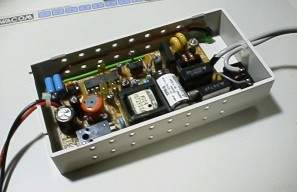

ボードマイコンなどのディジタル回路の実験では+5Vの電源が必要になりますね。実験用可変電圧電源を使うことが多いと思いますが、可変電圧電源は重くてかさばります。そんなときは、ディジタル回路専用電源を作っておくとよいでしょう。要はスイッチング電源を適当なケースに入れて使うだけなんですけどね(^_^;。でも、こんなもんでも結構重宝します。
出力容量は10Wもあれば十分でしょう。実験用電源はスイッチが使いやすさのポイントですので、操作しやすいものを付けましょう。わたしの例では安価な波動スイッチを使っていますが、プッシュスイッチの方がベターです。
